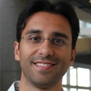
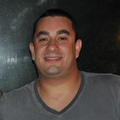

Sobre
So you want to organize a conference? That's pretty awesome! But we know that you don't have time to create the website, since you have to worry about contacting sponsors, chossing the right place, buying airplane tickets for speakers and many other things.
That's why we created this project! Conf Boilerplate is an iniciative of BrazilJS Foundation that provides a simple structure built on top of Docpad, a static generator in NodeJS, with all the things you need to create a event. We also provide a responsive template with i18n!
This is just a live demo, check our repository on Github for more details =D
Localização
Universidade Federal de Santa Catarina. Florianópolis, Santa Catarina
Agenda
Segunda
13Terça
14Quarta
15Quinta
16Sexta
17| 10h00 | Desenvolvimento de aplicativos Firefox OS Guilherme Berghauser | ? |
| 12h00 | Almoço | - |
| 13h30 | Em breve... | - |
| 14h30 | Como contribuir com o Projeto Fedora Marcelo Barbosa | ? |
| 15h30 | Coffee-break | - |
| 16h00 | Ambient Assisted Living Mário Dantas | ? |
| 18h30 | - | |
| 13h30 | Em breve... | - |
| 12h00 | Almoço | - |
| 13h30 | Go Lang Nassor P. da Silva | ? |
| 14h30 | Fedora como solução para sistemas embarcados Marcelo Barbosa | ? |
| 15h30 | Coffee-break | - |
| 16h00 | O problema de pequenos desempenhos em grandes máquinas Laércio L. Pilla | A palestra abordará os desafios na obtenção de alto desempenho com aplicações científicas em máquinas paralelas. Entre as questões a serem discutidas estão: como aplicações científicas funcionam; como plataformas paralelas de alto desempenho são organizadas; quais são as origens dos problemas de desempenho de comunicação e desbalanceamento de carga; e como podemos tratar destes problemas. |
| 16h00 | Python parte 1 Tarcísio E. M. Crocomo | ? |
| 12h00 | Almoço | - |
| 13h30 | - | |
| 14h30 | TV Digital Interativa Aldo von Wangenheim | ? |
| 15h30 | Coffee-break | - |
| 16h00 | Mozilla Developmer Network Michel Wilhelm | ? |
| 18h00 | Python parte 2 Tarcísio E. M. Crocomo | ? |
| 10h00 | - | |
| 12h00 | Almoço | - |
| 13h30 | ? Antônio F. Loureiro | ? |
| 14h30 | Processadores Manycore... Márcio B. Castro | ? |
| 15h30 | Coffee-break | - |
| 16h00 | Em breve... | - |
| 18h00 | Em breve... | - |
| 10h00 | Em breve... | - |
| 12h00 | Almoço | - |
| 13h30 | Em breve... | - |
| 14h30 | Em breve... | - |
| 15h30 | Coffee-break | - |
| 16h00 | Em breve... | - |
| 18h00 | Em breve... | - |
Palestrantes
-
Antônio A. F. Loureiro
?
-
Guilherme Berghauser
Estudante de Sistema de Informação pela UTFPR – Pato Branco, voluntário da Mozilla (Mozillian), participa do projeto Firefox Student Ambassador,membro do grupo de usuários de Software Livre PatoLivre, Sócio-Fundador da QiLeverage empresa especializada no desenvolvimento de softwares educacionais, foi professor durante sete anos e nos últimos quatro anos se dedica ao desenvolvimento web e mobile.
-
Karina G. Roggia currículo lattes
Possui Doutorado em Matemática pelo Instituto Superior Técnico em Lisboa, Portugal. É Bacharel e Mestre em Ciência da Computação pela Universidade Federal do Rio Grande do Sul. Foi membro do SQIG, vinculado ao Instituto de Telecomunicações em Portugal e atualmente é pesquisadora no i3G - Instituto de Governo Eletrônico, Inteligências e Sistemas. Tem experiência docente na graduação em Ciência da Computação tendo ministrado as disciplinas Teoria dos Grafos e Análise Combinatória, Linguagens Formais e Autômatos e Teoria das Categorias.
-
Laércio L. Pilla currículo lattes
Laércio Lima Pilla é professor no Departamento de Informática e Estatística da Universidade Federal de Santa Catarina. Ele obteve seu título de Doutor em Ciência da Computação em 2014 em uma cotutela entra a Universidade Federal do Rio Grande do Sul e a Université de Grenoble na França. Seus tópicos de pesquisa envolvem escalonamento, balanceamento de carga, perfilamento de plataformas, predição de desempenho e redução de consumo de energia.
-

Márcio B. Castro
Professor do Departamento de Informática e Estatística da Universidade Federal de Santa Catarina. Doutor em Ciência da Computação pela Université de Grenoble (França). Bacharel e Mestre em Ciência da Computação pela Pontifícia Universidade Católica do Rio Grande do Sul (PUCRS). Participa do Laboratório Internacional em Processamento de Alto Desempenho e Informática Ambiente (LICIA). Possui experiência na área de Ciência da Computação, com ênfase em Processamento Paralelo e Distribuído, atuando principalmente nos seguintes temas: modelos de programação paralela e distribuída, arquiteturas multicore e manycore, aplicações científicas paralelas, afinidade de dados e threads.
-

Marcelo Barbosa firemanxbr.org
Evangelista open source, membro da equipe de Packager do Fedora onde atua também como Ambassador e Coordenador do L10N Brazilian Portuguese Team. Programador para soluções embedded focadas em linux e hardware ARM, atualmente envolvido com projetos de Virtualização com KVM e oVirt como também trabalhando com o buildsystem YOCTO na empresa Datacom. Sua última contribuição tem sido na portabilidade dos frameworks de visão computacional para o Fedora como também portando pacotes e bibliotecas Python para a distribuição.
-

Mário Dantas
?
-

Michel Wilhelm
?
-
Nassor P. da Silva
?
-
Sérgio Peters
Possui graduação, mestrado e doutorado em Engenharia Mecânica pela Universidade Federal de Santa Catarina. Atualmente é professor do Departamento de Informática e Estatística e pesquisador na área de métodos numéricos para resolução das equações diferenciais parciais que modelam o escoamento de fluidos e a transferência de calor.
-
Tarcísio E. M. Crocomo
?